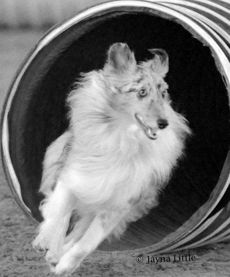

About Me
As much as I like sweets, I love my dogs more... I am currently learning full stack web development at the UT Austin Coding Bootcamp. After 27 years as an orthotist, it was long overdue. I am also earning my Master's degree in Human Dimensions of Organizations, also at the Univeristy of Texas - Austin. When I'm not in class, I run canine agility two nights a week, teaching a class one of those nights. My wiggle butt Aussie and my beloved Shetland Sheepdog (pictured above) are my willing participants in this exciting sport.
Though I don't have time to sleep or eat right now, and can get a bit cranky, I have to give Kudos to my loving husband Tom for all his support and patience. I don't know how I could get through the day without his hugs and dorkalicious antics.
Connect with Me